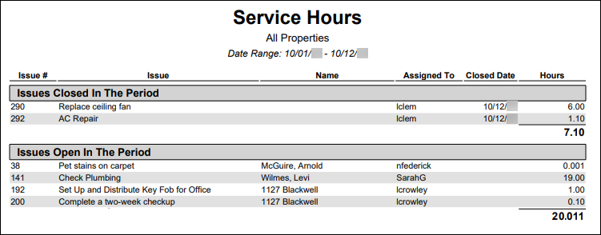
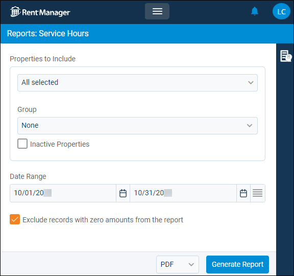

Source: https://rmxhelp.rentmanager.com/Topics/Express/Other/Reports/Service-Hours.htm
Service Hours (Report)
The Service Hours report tracks total service hours recorded on issues that were opened or closed during a date range. Service hours are calculated from entries made via Service Manager through a Tech Time type history/note item or rmAppSuite Pro by checking in and out of the issue.
The issues in the report are divided into two sections: Issues Closed In the Period and Issues Open In the Period.
Related Privileges
| Group | Privilege | Column |
|---|---|---|
| Letter/Email Templates/Reports/Packets | Run reports | Enabled |
Additionally, on the Reports tab, you must have access to Service Hours.
For more information, refer to Control User Access.
To view the Service Hours report, do the following:
-
Go to
 arrow_forward Services arrow_forward Service Manager arrow_forward Service Hours.
arrow_forward Services arrow_forward Service Manager arrow_forward Service Hours.
The Reports: Service Hours page displays. -
Adjust the report options as desired. Each option is described below.
-
Generate the report in your desired file format(s).

Report Options
The report options described below determine what data displays in the report.

Properties to Include
Select each property or a property Group to be included in the report.
More Information
This field populates only with the properties to which you have access. Your access to properties can be managed from your user account or on the property's details page. For more information, refer to Limit Access to a Property.
Optionally, check Show Inactive Properties to include properties that are no longer active.
Date Range
Enter or select the date range to determine the data that displays in the report.
In the Date Range section, set the From and To dates for which the report should examine data.
These fields automatically populate with today’s date. Enter a different date or select a date from the calendar. Alternatively, adjust the dates using the available preset buttons or click  to open more options for setting a date range.
to open more options for setting a date range.
Exclude Records with Zero Amounts from the Report
Check to remove issues with no Hours entered.
Report Results
The report results are described below including, if applicable, section, column, and subreport descriptions.
Report Header
The report header displays the report name and key information selected in the report options, such as date information and which properties were examined in the report.
Column Descriptions
The columns that display in the report are described below.
| Column | Description |
|---|---|
|
Issue # |
The system-generated issue number of each service issue included in the report. |
|
Issue |
The title of the issue as entered on the Issue details page in the Title field. |
|
Name |
The name of the tenant, prospect, unit, or property linked to the service issue, if applicable. Issues with a linked tenant, prospect, unit, or property display in the report only if the associated property is selected in the Properties to Include report option. |
|
Assigned To |
The username of the user assigned to the issue. |
|
Closed Date |
In the Issues Closed In The Period section, the date on which each service issue was closed displays. In the Issues Open In The Period section, this column is blank. |
|
Hours |
The total of service hour entries for each of the issues that were opened or closed during the period. At the end of each section, the total number of hours for all closed issues and the total number of hours for all opened issues displays. |